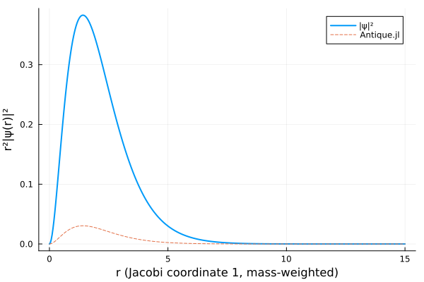

Positronium
Positronium is the two-body electron-positron Coulomb problem. With equal masses the exact ground-state energy is -0.25 Ha.
using FewBodyECG
import Antique
using Plots
ops = Operators([1.0, 1.0], [+1.0, -1.0])
ops += "Kinetic"
ops += "Coulomb"
sol = solve(ops, SVM(basis = 25, candidates = 20, scale = 1.4))
sol
ps = Antique.CoulombTwoBody(
z₁ = 1, z₂ = -1, m₁ = 1.0, m₂ = 1.0, mₑ = 1.0, a₀ = 1.0, Eₕ = 1.0, ħ = 1.0
)
exact = Antique.E(ps, n = 1)
println("E0 = ", sol.E₀, " Ha (Antique ", exact, ", Δ = ", sol.E₀ - exact, ")")
plot(sol, exact)
ψ = wavefunction(sol)
μ = inv(1 / 1.0 + 1 / 1.0)
rs = range(1.0e-3, 15.0, length = 400)
p = plot(ψ; coord = 1, rmax = 15.0)
plot!(
p, rs,
[r^2 * abs2(μ^(-3 / 4) * Antique.ψ(ps, r / sqrt(μ), 0.0, 0.0; n = 1, l = 0, m = 0)) for r in rs];
linestyle = :dash,
label = "Antique.jl",
)
p
This page was generated using Literate.jl.